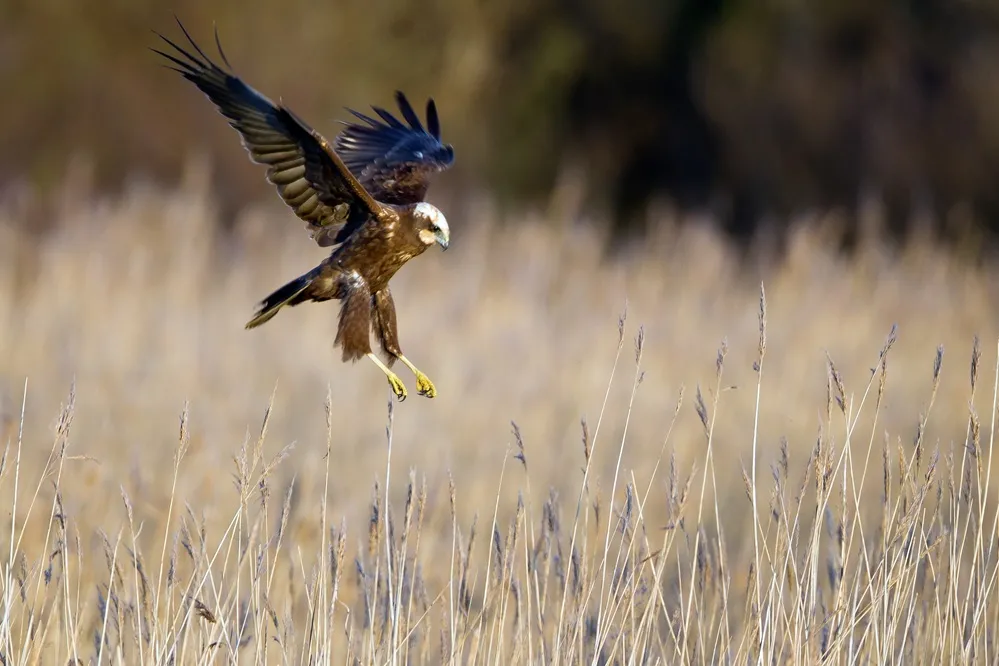
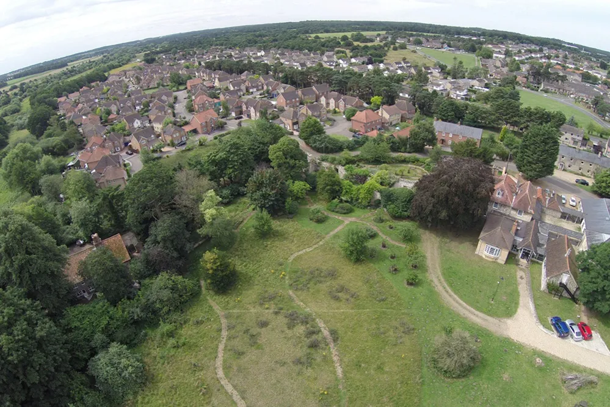
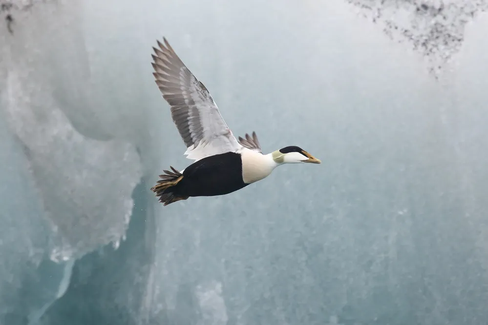

Discover a wealth of information on the UK's birds by exploring our data, reading our masterclass
articles, book reviews and blog posts. From the latest information on the birds on your
Explore our data
BTO collects, analyses, reports on and a wide range of data including facts and figures on
British birds (including bats and butterflies), trends in numbers and breeding performance over 50 years and
which birds can be found near you.
Name of birds

By species
BirdFacts Species gives

By county or area
Find species lists

country
Explore how a particular
All about birds
Our Cuckoo tracking journey
BTO’s Chris Hewson reflects on what it’s like to tag Cuckoos, what’s new for the project this year, and
why it’s vital that the project continues.The bird breeding season
From Great Crested Grebes to Goldcrests, Dunnocks to Lapwings and Cuckoos, the breeding season is full
of amazing nesters.Foraging “fingerprints”
Understanding an individual bird’s behaviour helps us predict how species may be affected by change. But
how do we research a bird’s “personality”?Gulls allowed?
Our experts unpick the facts behind the headlines about gulls and why there's no such thing as a
'single' seagull.